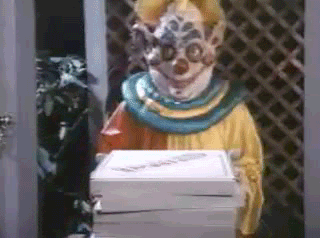
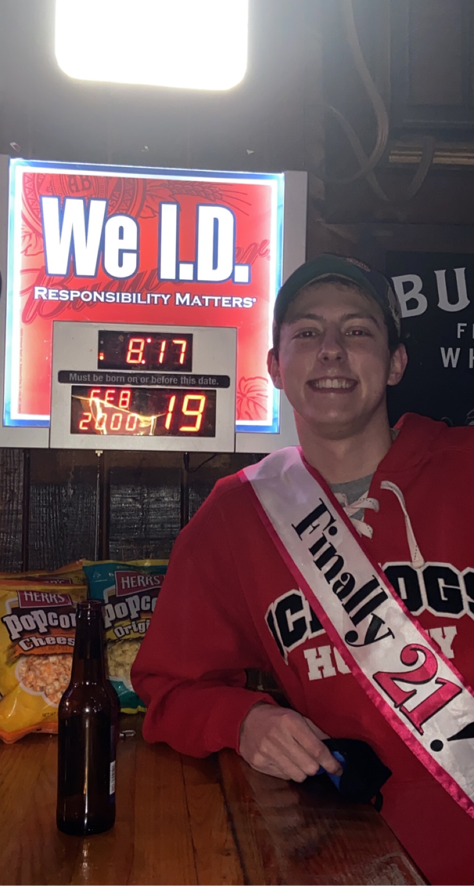
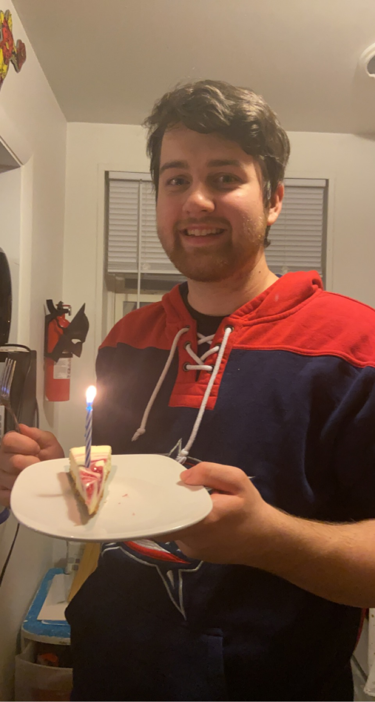
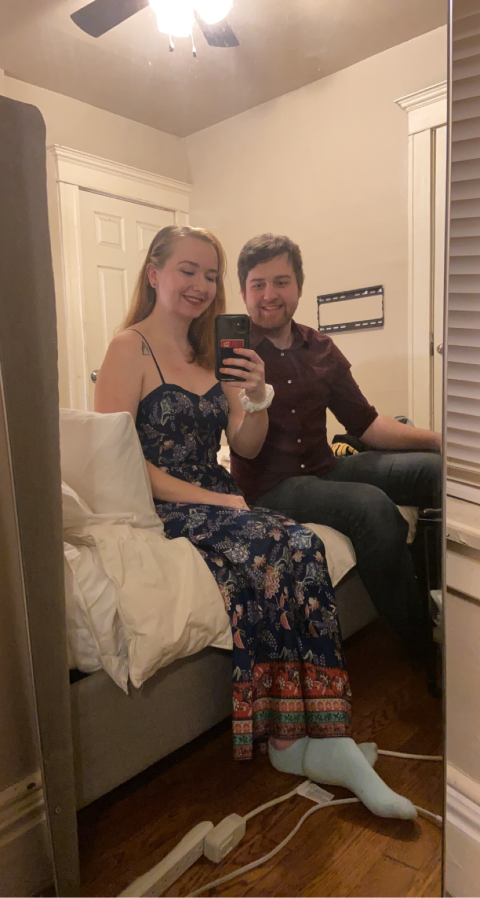
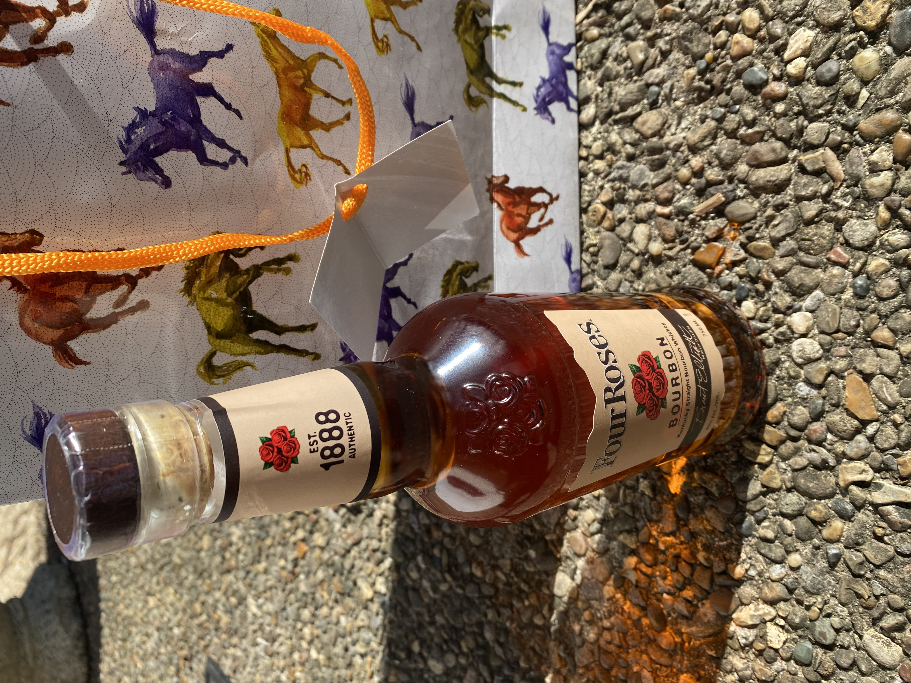
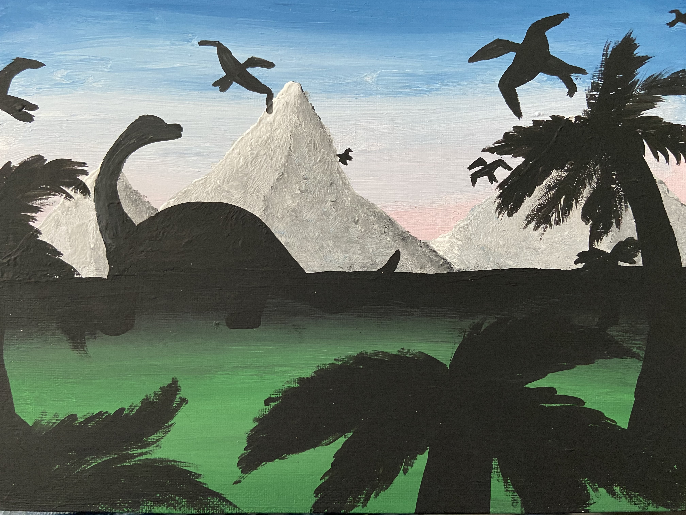
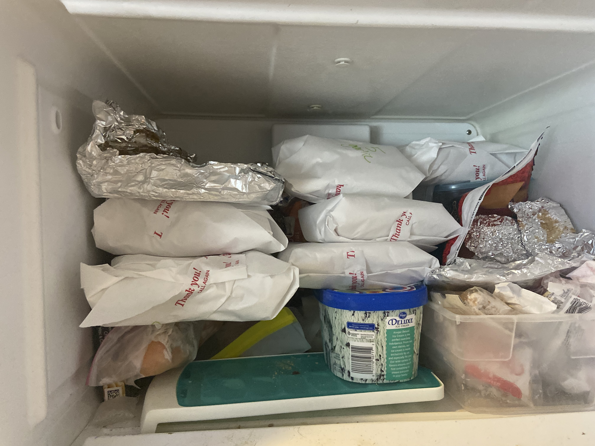

Killer Birthdays
Week Ten
March 22, 2021-March 28, 2021
March (and even February) has hosted several birthdays for friends and family so I have been in the ultimate birthday planning mode. I don't have any more birthdays to celebrate until.... June? July for sure... NO! The next is may. I have one birthday in April then three back to back in May. Looks like I have one month (kinda) off.
Let's digest them:
My gorgeous cousin was the first birthday in Febrary where we threw her a not-so surprise party.
My step-brother had a birthday, but I was not fortunate enough to celebrate in person.
Then, the stunning sister was next. We just ate good food for a whole day. I gained 2 pounds and she probably dropped 2 pounds that lucky --
The day after was my uncle's in which we FaceTime'd for.
After that, we had our first 21st birthday of the year.
My partner-in-crime, my life partner, my dumbass, was next on the list. I already talked about Niagara/Buffalo.
 ^^ HOT DAMN
Then, March hit and we had...
My grandma, in which I ordered her favorite bourbon and a gift bag with her favorite animal to be delivered.
My tall as f*** brother hung out with me for a weekend. (I didn't get a picture so enjoy this "high school boy poses in front of a mirror" picture of him.)
Another 21st birthday happend, which just so happened to also be St. Patty's Day so we went SUPER early to beat the non-existant crowd at R-Bar.
Then we had a wine & paint night celebration for a friend who had to move back home. The painting is mine, I didn't get a zoom picture of the other paintings.
Now, I am getting ready to celebrate my grandpa's birthday by stuffing my freezer with 30 of his favorite sausages, making me look like a serial killer.
Since he lives closer than my grandma, we are fortunate enough to go down and grill them together. I am so excited because they are Schmidt's sausages. If you are not familiar with Schmidt's , once the buffet is open again, PLEASE go. It is SO GOOD. Keeping in mind it is only sausages and other German food.
That being said, I am a killer queen at birthday surprsies and parties, but do not ask me for help. As you can see, my plate is extremely full.
Happy Birthday to those we have already celebrated and those who are coming up soon!!
Return to Blog List, Internet Art main page , Collections, Home.